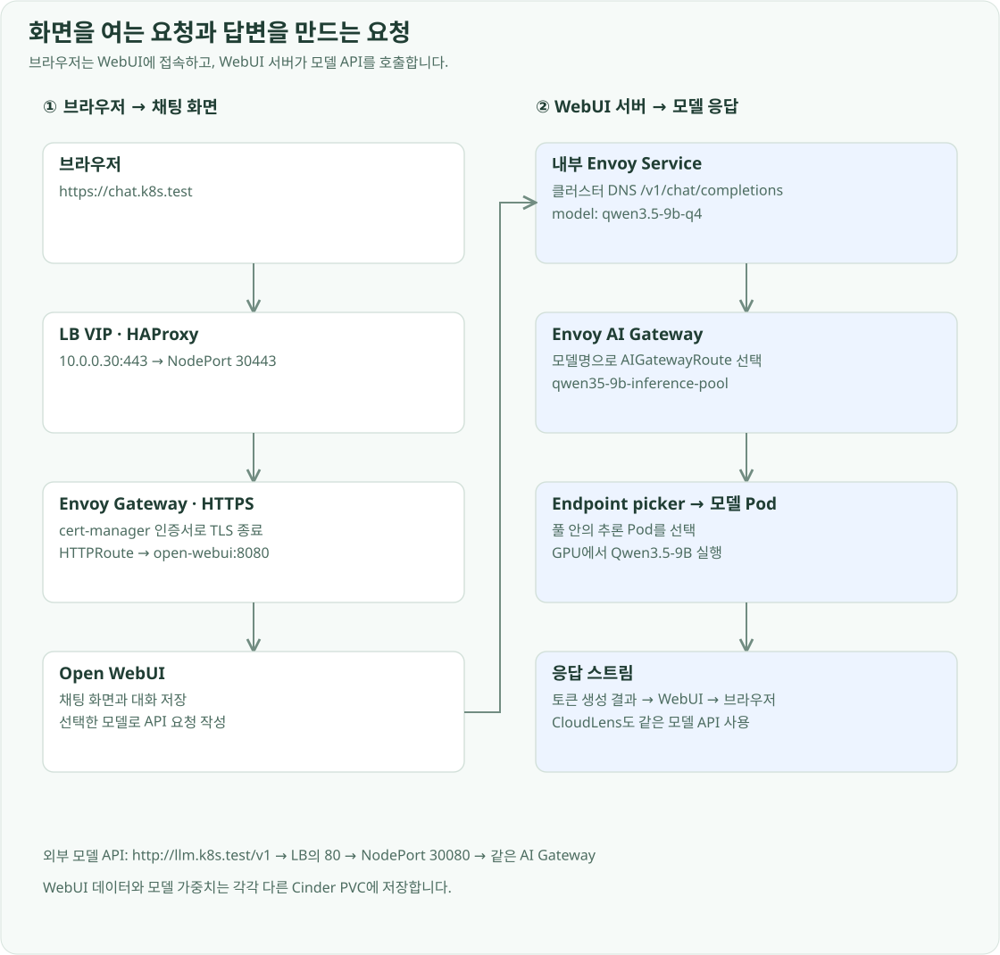
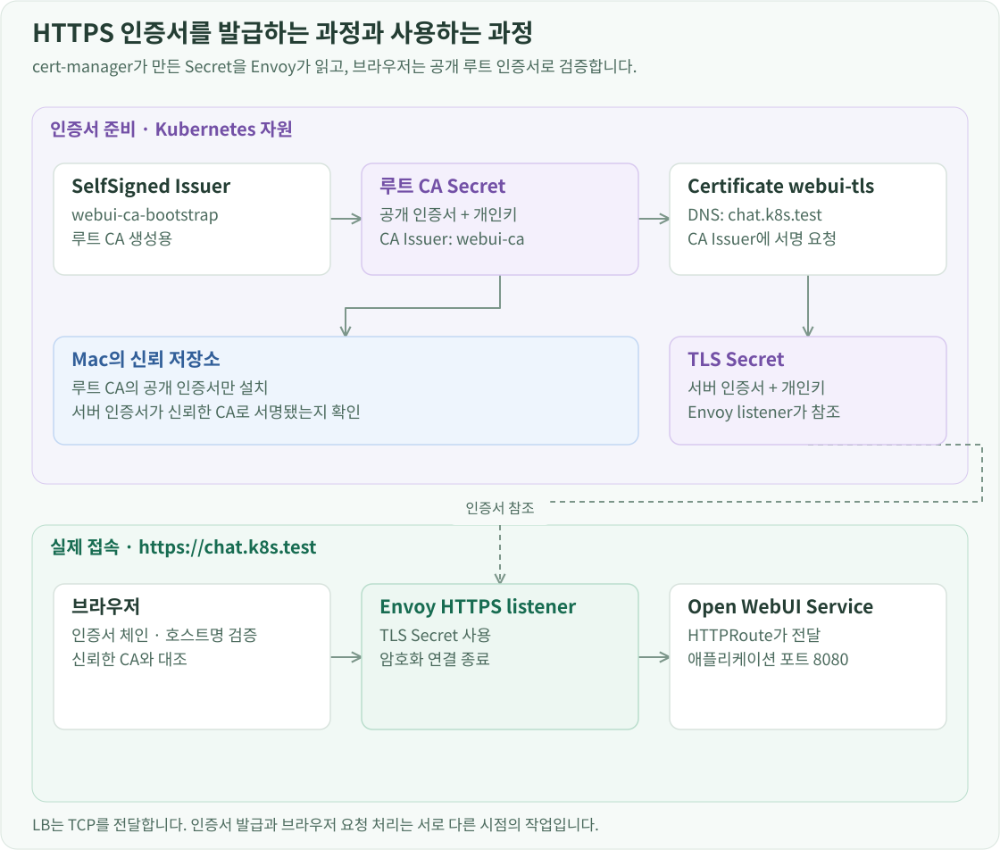

구축 개요
Open WebUI는 브라우저에서 모델과 대화하는 화면과 그 요청을 처리하는 서버를 제공합니다. 모델을 직접 실행하지 않고 OpenAI 호환 API를 호출합니다. 이 환경에서는 Open WebUI를 일반 워커에 배치하고, GPU 워커의 모델 서버에는 클러스터 내부 Gateway를 통해 연결합니다.

채팅 데이터와 실행 설정 준비
Open WebUI는 llm-d Namespace의 worker-01에서 Deployment 한 개로 실행합니다. Helm 차트는 17.0.0, 컨테이너 이미지는 v0.12.4-slim을 사용하며 이미지 digest도 고정합니다. 차트 버전은 Kubernetes 자원을 생성하는 템플릿의 버전이고, 이미지 버전은 실제 WebUI 프로그램의 버전입니다.
데이터 디렉터리 /app/backend/data에는 open-webui-data PVC를 연결합니다. PVC는 cinder-ssd StorageClass로 2 GiB를 요청합니다. 모델 가중치가 저장된 PVC와 분리했기 때문에 모델 서버를 교체해도 WebUI 데이터는 같은 볼륨을 사용합니다.
apiVersion: v1
kind: PersistentVolumeClaim
metadata:
name: open-webui-data
namespace: llm-d
spec:
accessModes: [ReadWriteOnce]
storageClassName: cinder-ssd
resources:
requests:
storage: 2Gi
WEBUI_SECRET_KEY는 애플리케이션의 서명 등에 사용하는 고정 키입니다. 컨테이너를 다시 만들 때마다 값이 바뀌지 않도록 open-webui-secret이라는 Kubernetes Secret에서 읽습니다. 값은 배포 파일에 작성하지 않고 별도로 생성·보관합니다.
개인 실습용 WebUI는 WEBUI_AUTH=false로 실행합니다. 설정은 Helm values에서 관리하며, ENABLE_PERSISTENT_CONFIG=false로 지정해 데이터베이스의 이전 설정보다 환경변수에 지정한 연결 주소를 사용하게 했습니다. 이 옵션은 채팅 데이터의 영속 저장과는 별개입니다. Open WebUI 환경변수 명세에 설정 저장 방식이 설명되어 있습니다.
WebUI가 호출하는 모델 주소
브라우저가 사용하는 chat.k8s.test와 WebUI 서버가 호출하는 모델 API 주소는 다릅니다. WebUI 서버는 다음 내부 Service 주소를 사용합니다.
http://envoy-llm-d-llm-gateway-075beb82.envoy-gateway-system.svc.cluster.local/v1
이 주소는 Envoy Gateway의 ClusterIP Service입니다. AIGatewayRoute/model-api의 hostnames에도 같은 DNS 이름을 등록합니다. 요청이 Gateway에 도착해도 Host가 Route와 일치하지 않으면 모델 경로에 연결되지 않기 때문입니다.
Helm values에서 API 주소와 기본 모델을 연결합니다.
openaiBaseApiUrl: http://envoy-llm-d-llm-gateway-075beb82.envoy-gateway-system.svc.cluster.local/v1
openaiApiKey: unused
extraEnvVars:
- name: ENABLE_OPENAI_API
value: 'true'
- name: DEFAULT_MODELS
value: qwen3.5-9b-q4
- name: WEBUI_SECRET_KEY
valueFrom:
secretKeyRef:
name: open-webui-secret
key: WEBUI_SECRET_KEY
unused는 현재 내부 모델 API에서 인증에 사용하지 않는 자리 값입니다. WebUI의 기본 모델명은 Gateway의 모델 선택 조건 및 추론 서버가 공개하는 이름과 일치시킵니다.
Ollama와 Pipelines는 설치하지 않습니다. 별도 모델 실행 계층 없이 기존 추론 API를 사용하기 때문입니다. WebSocket은 유지하고, WebUI 인스턴스가 하나이므로 Redis를 통한 인스턴스 간 메시지 동기화는 구성하지 않습니다. 제목·태그·후속 질문 자동 생성도 꺼서 채팅 외 추가 모델 호출을 줄였습니다.
Helm으로 WebUI 배포
PVC와 Secret을 준비한 뒤 공식 Helm 차트를 적용합니다. 다음 명령은 배포 저장소의 infra/helm/open-webui 디렉터리에서 실행합니다.
kubectl --context openstack-k8s-llmd-lab apply -f pvc.yaml
helm repo add open-webui https://helm.openwebui.com
helm repo update open-webui
helm --kube-context openstack-k8s-llmd-lab upgrade --install \
open-webui open-webui/open-webui --version 17.0.0 \
--namespace llm-d --values values.yaml --wait --timeout 5m
values의 persistence.existingClaim은 준비한 PVC를 사용하게 합니다. Deployment의 교체 방식은 Recreate로 지정해 이전 Pod를 정리한 뒤 새 Pod가 같은 볼륨을 사용하게 합니다. /health를 startup·readiness probe로 검사하고, 준비된 Pod에만 Service가 요청을 전달합니다.
slim 이미지의 초기 데이터 디렉터리는 비어 있을 수 있습니다. 차트의 초기화 명령은 파일 glob 대신 cp -R -n /app/backend/data/. /tmp/app-data/로 디렉터리를 복사하도록 지정합니다.
cert-manager와 Envoy에서 HTTPS 구성
브라우저 접속 주소는 https://chat.k8s.test입니다. 클라이언트에서 이 이름을 LB VIP 10.0.0.30으로 해석하게 설정합니다. TCP 연결은 HAProxy의 443 → 워커의 30443 NodePort → Envoy 순서로 전달됩니다.

TLS 인증서는 cert-manager가 관리합니다. webui-ca-bootstrap SelfSigned Issuer로 루트 CA 인증서와 키를 만들고, webui-ca Issuer가 그 CA로 chat.k8s.test 서버 인증서를 발급합니다. 서버 인증서는 webui-tls Secret에 저장합니다.
apiVersion: cert-manager.io/v1
kind: Certificate
metadata:
name: webui-tls
namespace: llm-d
spec:
secretName: webui-tls
dnsNames: [chat.k8s.test]
duration: 2160h
renewBefore: 360h
privateKey:
algorithm: ECDSA
size: 256
rotationPolicy: Always
issuerRef:
name: webui-ca
kind: Issuer
Gateway의 webui-https listener는 이 Secret을 참조해 TLS를 종료합니다. HTTPRoute는 Host가 chat.k8s.test인 요청을 open-webui:8080으로 전달합니다. 별도의 HTTPRoute가 HTTP 접속을 HTTPS로 301 리다이렉트합니다.
인증서 발급과 라우팅을 적용하는 순서는 다음과 같습니다.
kubectl --context openstack-k8s-llmd-lab apply -f ca.yaml
kubectl --context openstack-k8s-llmd-lab apply -f certificate.yaml
kubectl --context openstack-k8s-llmd-lab apply -f httproute.yaml
루트 CA의 공개 인증서를 Mac의 신뢰 저장소에 등록하면 브라우저가 이 인증서 체인을 신뢰합니다. CA 개인키는 Kubernetes Secret 안에 보관하고 클라이언트로 복사하지 않습니다.
Mac에서 공개 인증서만 내보내면 curl의 CA 파일로도 사용할 수 있습니다.
kubectl --context openstack-k8s-llmd-lab -n llm-d get secret webui-root-ca \
-o jsonpath='{.data.tls\.crt}' | base64 --decode > webui-root-ca.crt
Service가 WebUI Pod로 요청을 전달하는 방식
이때 Service 이름과 Pod 주소도 구분해야 합니다. WebUI의 Service는 고정된 접속 지점을 제공하고, selector로 선택한 Pod의 IP·대상 포트·준비 상태는 EndpointSlice에 기록됩니다. Pod가 교체되면 실제 주소는 바뀌지만 이 연결 정보가 갱신되므로 Route에서 매번 새 Pod IP를 설정할 필요가 없습니다. Service가 Pod를 선택하는 기준은 Deployment의 소유 관계가 아니라 라벨입니다. 따라서 Service가 존재해도 selector가 맞지 않거나 준비된 endpoint가 없으면 정상적인 트래픽 전달로 이어지지 않습니다.
사용자가 질문을 보냈을 때
사용자가 질문을 전송하면 WebUI 서버에서 별도의 모델 API 요청이 시작됩니다. 이 요청은 외부 VIP로 다시 나갔다 들어오지 않고, Kubernetes 내부의 Envoy Service를 호출합니다. 내부 Service의 DNS 이름도 AIGatewayRoute의 Host 조건에 넣은 이유입니다. 응답은 모델 서버 → Envoy → WebUI → 브라우저 순으로 스트리밍됩니다.
GPU와 Pod의 사용량을 수집하는 방법은 Prometheus와 DCGM 수집 경로에서 확인할 수 있습니다.